📖 BIBLICAL WORLD 3D™ — SISTEMA VISUAL COMPLETO
Nueve guías ilustradas revelan dónde ocurrió cada historia, cuándo sucedió,
quién estuvo allí y cómo vivía la gente.
Todo el contexto en un solo lugar, sin tener que buscar entre libros, videos y mapas desconectados.
Para que puedas comprenderla con mayor claridad y mostrársela a otros.
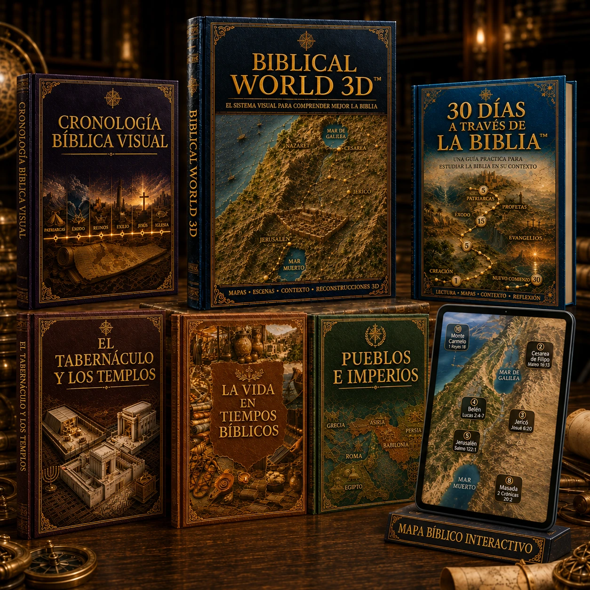
🛡️ Garantía de 15 días · 🔒 Pago seguro · 📧 Acceso inmediato
VISTA PREVIA DEL CONTENIDO
Estas seis láminas se incluyen en los PDF. Vista previa de los mapas, los cortes 3D y las explicaciones de la edición en español.
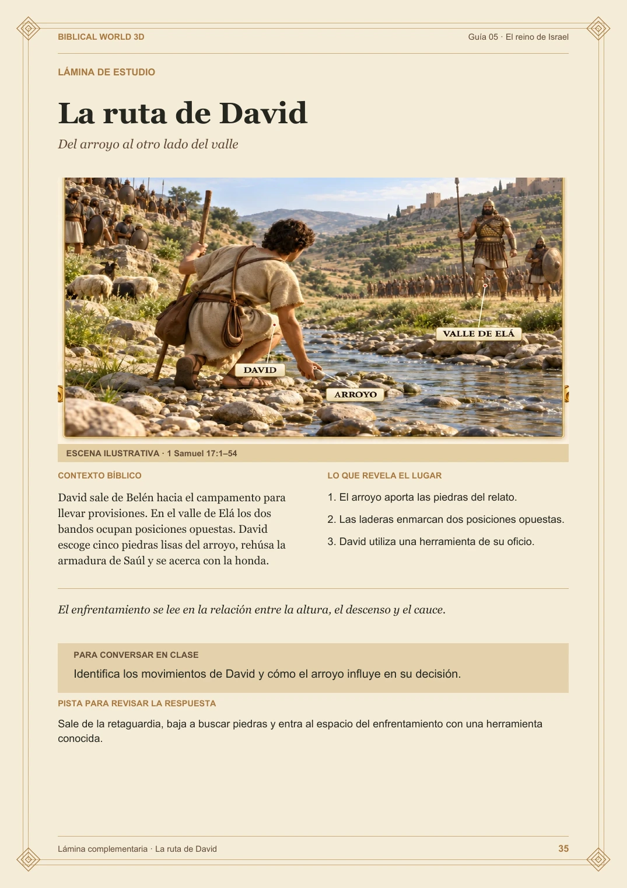
La ruta de David
El valle de Elá · Parte 5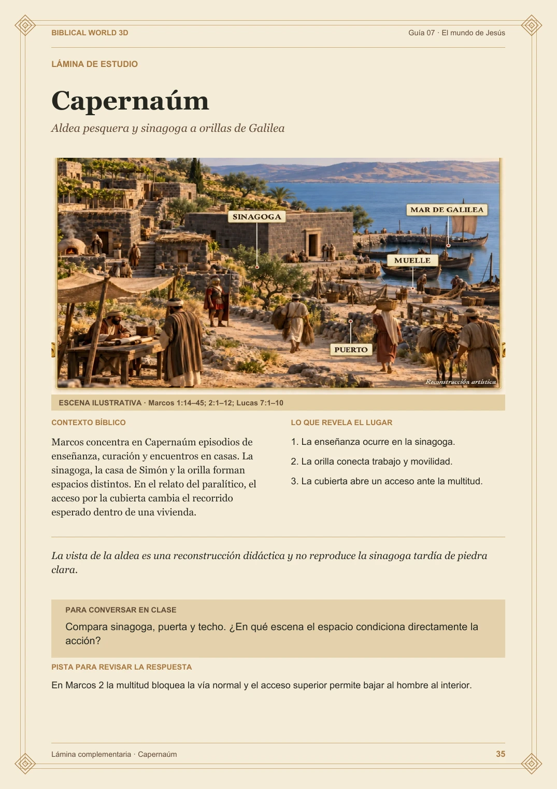
Capernaúm
Reconstrucción 3D · Parte 7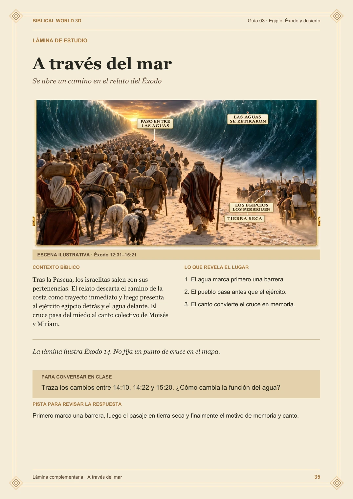
A través del mar
El Éxodo · Parte 3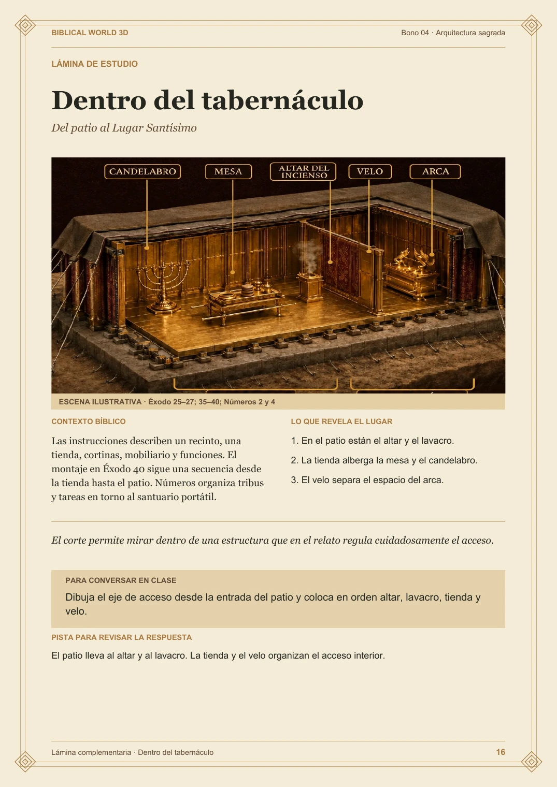
Dentro del Tabernáculo
Vista en corte 3D · Bono 4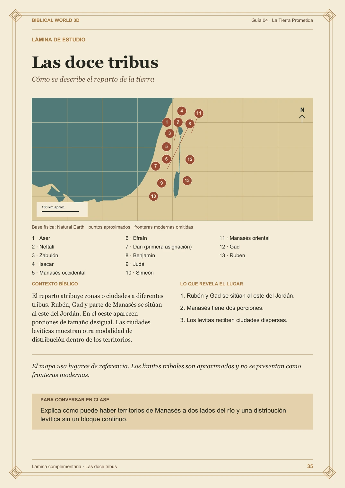
Las doce tribus
Cartografía · Parte 4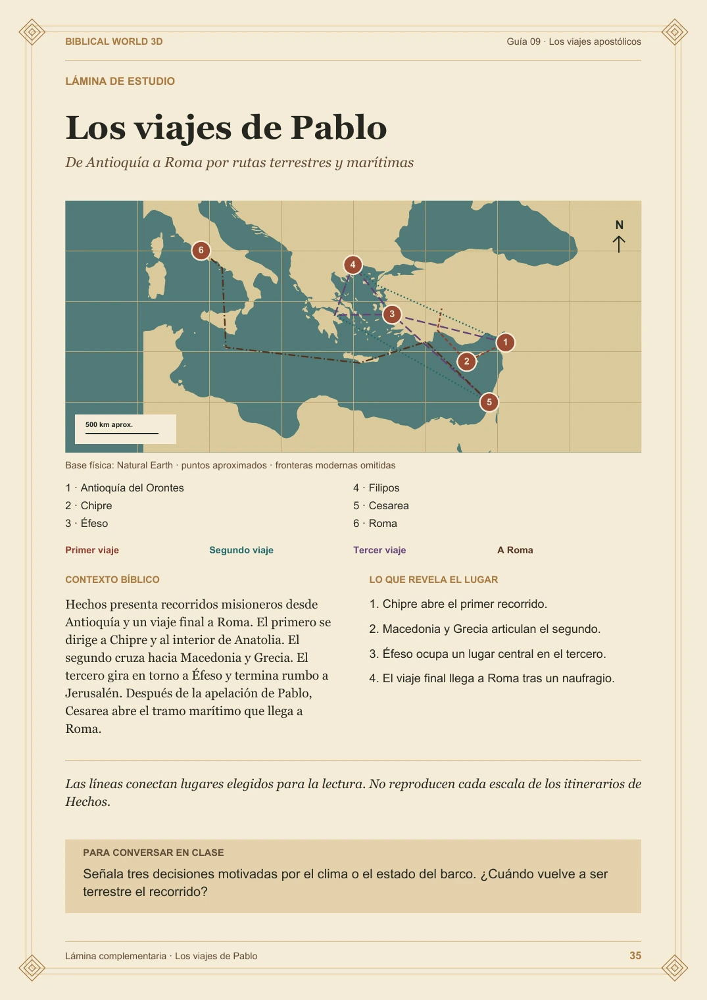
Los viajes de Pablo
De Antioquía a Roma · Parte 9Estas son 6 páginas reales, tal como aparecen en los PDF. El sistema completo incluye más de 100 mapas y escenarios organizados en 9 partes, desde los primeros acontecimientos bíblicos hasta los viajes apostólicos.
Lees que subieron de Jericó a Jerusalén, pero no sabes si fue una caminata corta o un viaje largo.
Samaria, Galilea y Judea aparecen en la misma página, pero puede ser difícil visualizar dónde estaba cada región en relación con las demás.
Conoces la historia de David y Goliat, pero quizá nunca imaginaste el valle donde realmente ocurrió.
Lees sobre el Tabernáculo y el Templo, pero todavía te cuesta imaginar cómo eran por dentro.
Filisteos, asirios, babilonios, persas: aparecen a lo largo de las Escrituras, pero puede ser difícil recordar quiénes eran y cómo encajaban en la historia.
No es falta de fe ni de estudio.
El texto describe un mundo que nunca has visto.
Cada mapa responde dónde. Cada reconstrucción muestra cómo. Cada explicación revela por qué importa cada detalle. Y todo está listo para mostrar en pantalla, imprimir o proyectar frente a tu grupo.
📖 No memorices nombres aislados: conecta lugares, rutas, arquitectura y significado.
300+
páginas
100+
mapas
9
partes
6
bonos
Lo que recibes exactamente
📧 Recibes todo por correo electrónico en minutos. Puedes abrir y conservar los PDF en cualquier celular, tableta o computadora. Las aplicaciones se abren en el navegador, sin instalar nada.
2 APLICACIONES WEB INCLUIDAS
Cuando cuesta imaginar una ruta, una ciudad o un escenario, también cuesta explicarlo. Por eso, las guías incluyen dos aplicaciones web: una para explorar el mapa lugar por lugar y otra para recorrer edificios bíblicos en 3D. Ambas funcionan en tu navegador, sin instalar nada.
APP 1
5 mapas ilustrados: Tierra Santa, los Patriarcas, el Éxodo, el mundo de Jesús y los viajes de Pablo. Toca un lugar para abrir su escena: una animación breve, una explicación narrada y el versículo bíblico.
APP 2
13 lugares reconstruidos en 3D: el Tabernáculo, el Templo de Salomón, el Arca de Noé, una sinagoga de Galilea y más. Sigue el recorrido guiado con narración y subtítulos. Gira los modelos 360° y abre las vistas interiores en los modelos que las incluyen.
Convierte nombres y lugares en imágenes que puedas comprender y mostrar. Úsalas para profundizar en tu lectura personal o como apoyo visual al preparar clases, estudios bíblicos y sermones. Ambas aplicaciones se abren en el navegador del celular, la tableta o la computadora.
TODO INCLUIDO
Los comienzos
El Edén, el Diluvio, Babel y los primeros escenarios bíblicos.
Los patriarcas
Abraham, Isaac, Jacob y José: dónde vivieron y qué distancias recorrieron.
Egipto, Éxodo y desierto
Egipto, el mar Rojo, el Sinaí y el camino hacia Canaán, paso a paso.
La Tierra Prometida
Josué, la conquista, el reparto entre las doce tribus y el período de los jueces.
El reino de Israel
Saúl, David, Salomón, Jerusalén y la división del reino.
Profetas, exilio y regreso
Asiria, Babilonia, Persia y el regreso a Jerusalén.
El mundo de Jesús
Belén, Nazaret, Galilea, Samaria, Judea y Jerusalén.
La Iglesia primitiva
Jerusalén, Antioquía y la expansión del cristianismo.
Los viajes apostólicos
Los recorridos de Pablo por Asia Menor, Grecia y Roma, junto con las comunidades que surgieron en el camino.
300+
páginas
100+
mapas
9
partes
inmediato
Si lees la Biblia y quieres comprenderla con mayor claridad. No necesitas formación teológica: cada estudio comienza con el relato bíblico, no con la geografía.
Si enseñas o predicas. Deja de depender solo de explicaciones verbales: proyecta la ruta, muestra el interior del Templo y entrega las hojas de evaluación al finalizar la clase.
Si estudias con tu familia o grupo pequeño. Recibes el material en PDF para abrirlo en tu celular, tableta o computadora y proyectarlo cuando lo necesites.
INCLUIDOS SIN COSTO ADICIONAL
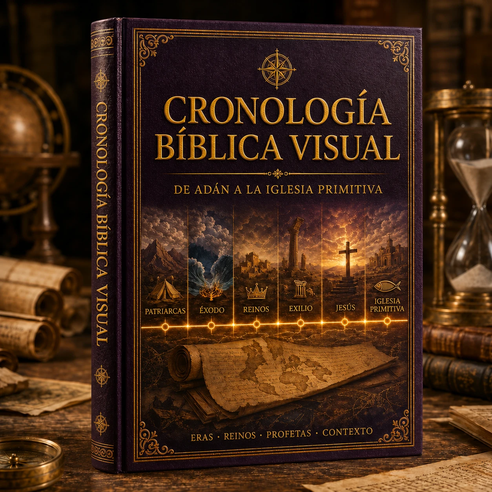
Una cronología visual completa desde los patriarcas hasta la Iglesia primitiva. Contempla las Escrituras como una historia conectada y no como una serie de acontecimientos aislados.
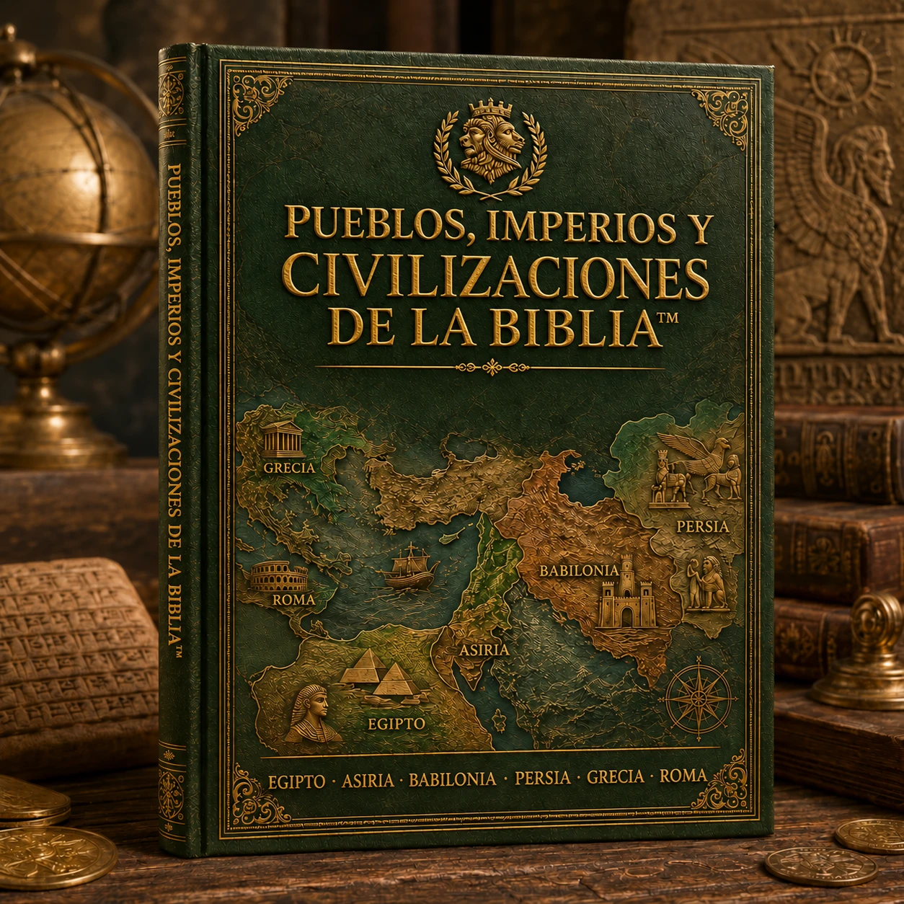
Egipcios, cananeos, filisteos, asirios, babilonios, persas, griegos y romanos: quiénes fueron, dónde vivieron y cómo se relacionaron con Israel.
Viviendas, alimentos, oficios, bodas, monedas, caminos y mercados. Descubre qué significaba realmente ser pastor, trabajar en un viñedo o viajar durante días.
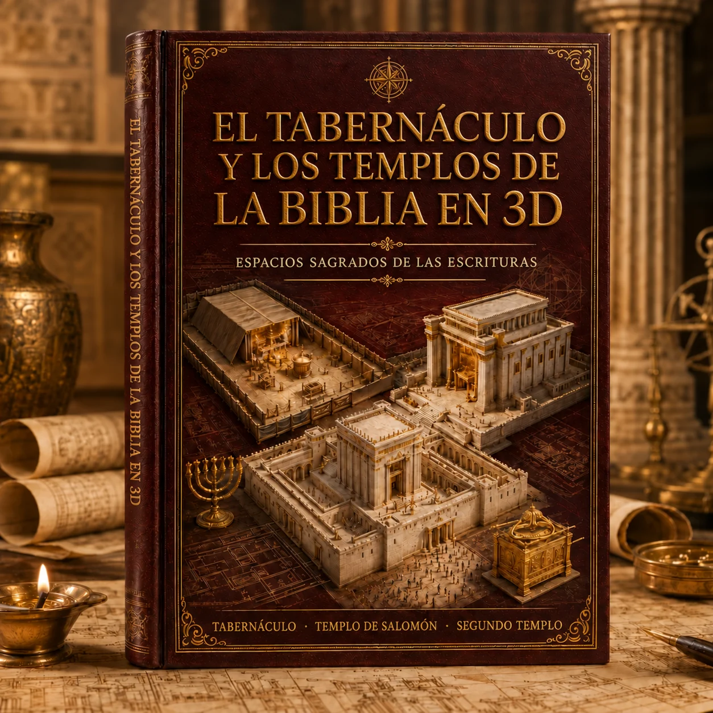
Compara los templos de Salomón, Zorobabel y Herodes, junto con el Tabernáculo del desierto. Explora sus patios, dimensiones, el Lugar Santo y el Lugar Santísimo desde el interior. Este es el tipo de material que otros venden por separado; aquí ya está incluido.
Un recorrido guiado de 30 días: lee el pasaje, ubícalo, visualízalo, comprende el contexto y vuelve a leerlo. Un camino sencillo para que siempre sepas por dónde empezar.
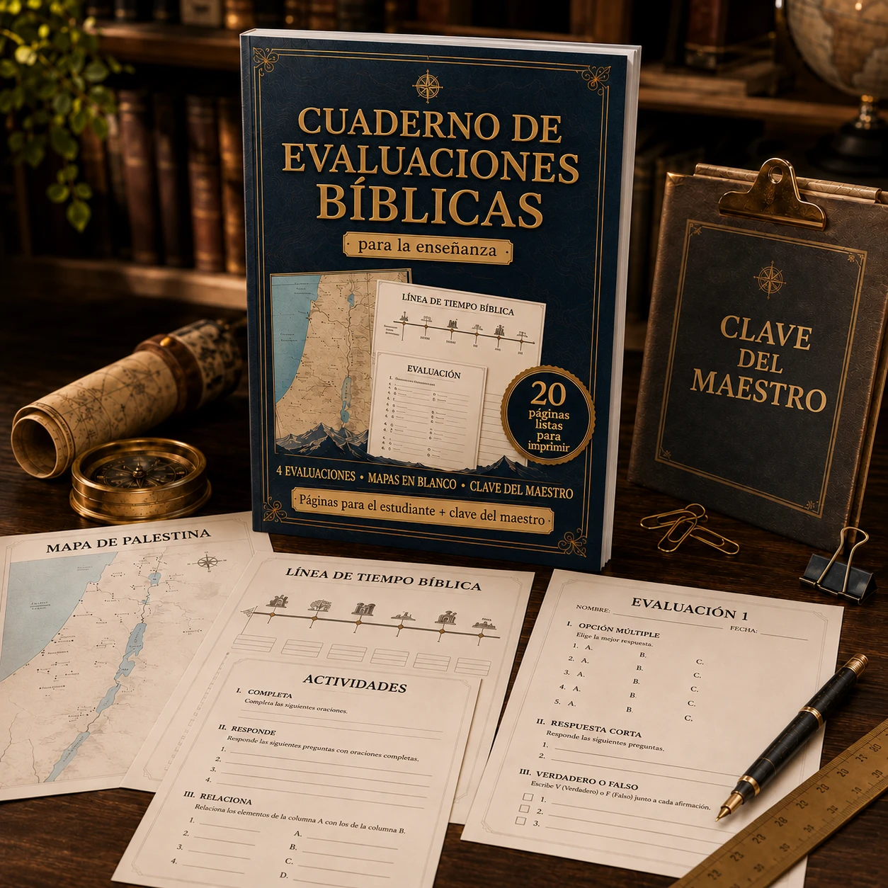
Veinte páginas listas para imprimir: cuatro evaluaciones con mapas en blanco, cronologías y actividades, cada una con su hoja para el alumno y su clave de respuestas para el maestro. Ver un mapa no es lo mismo que aprenderlo— este material convierte el atlas en una herramienta con la que los alumnos pueden practicar y ofrece a los maestros actividades listas para entregar.
Valor de los 6 volúmenes adicionales: US$ 25
🎁 GRATIS HOY · Incluidos con Biblical World 3D™9 guías PDF + 6 libros adicionales + 2 aplicaciones web + 18 animaciones 3D
Pago único · acceso de por vida
Seis lectores, seis dudas diferentes antes de comenzar
Pensé que sería demasiado técnico para mí porque no sé mucho de historia ni geografía. Pero todo está explicado de una manera muy visual y fácil de seguir. Ahora, cuando leo la Biblia, puedo ubicar los lugares y comprender mucho más rápido lo que está sucediendo.
✔ No necesitas conocimientos de historia ni geografíaLo que más me sorprendió es que no se siente como un atlas tradicional. Los mapas, las reconstrucciones y las explicaciones se complementan. No solo veo dónde ocurrió algo: entiendo mucho mejor la escena, las distancias y el contexto.
✔ Mucho más que una colección de mapasHay pasajes que había leído muchas veces, pero nunca los había visualizado así. Ver Jerusalén, el valle de Ela y las rutas bíblicas me ayudó a comprender detalles que antes pasaba por alto. Le da un escenario real a lo que estás leyendo.
✔ Ayuda a comprender las Escrituras con mayor claridadTengo una Biblia de estudio y otros recursos, pero esto me ofrece algo diferente. Las notas explican el texto, mientras que Biblical World 3D me ayuda a visualizarlo. Se complementan especialmente bien en los relatos donde importan el lugar, el terreno o la ruta.
✔ Complementa tu Biblia de estudioMe gustó que no solo te entregan el material y te dejan por tu cuenta. El recorrido de 30 días me ayudó a empezar de inmediato y a saber en qué enfocarme en cada estudio. Terminé usando el contenido mucho más de lo que esperaba porque siempre tenía claro cuál era el siguiente paso.
✔ Un camino claro para ponerlo en prácticaLo compré para mi estudio personal, pero terminé mostrándoles varias páginas a mis hijos. Las imágenes y los escenarios hicieron que se interesaran mucho más por las historias. Ahora solemos leer el pasaje y luego mirar cómo era realmente el lugar.
✔ También es útil para estudiar en familiaCÓMO UTILIZARLO
El mismo material sirve para tu lectura bíblica de la mañana y para tu clase del domingo.
O puedes saber exactamente dónde mirar la próxima vez que leas un pasaje.
⚡ Acceso inmediato · Más de 300 páginas + 6 libros adicionales + 2 aplicaciones web · Garantía de 15 días
Antes de decidir
¿Todavía tienes alguna duda? Precisamente para eso existe la garantía de 15 días.
📖 QUIERO ACCEDER A BIBLICAL WORLD 3D →